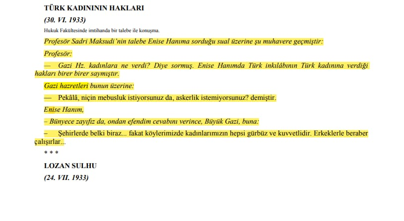
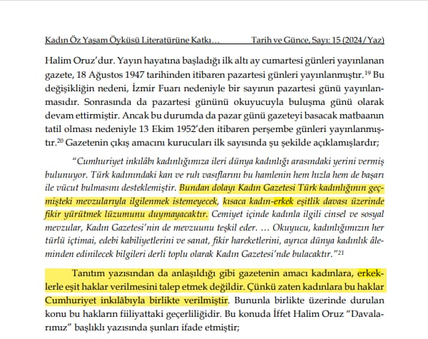
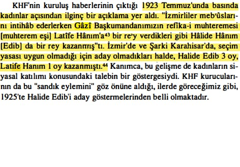
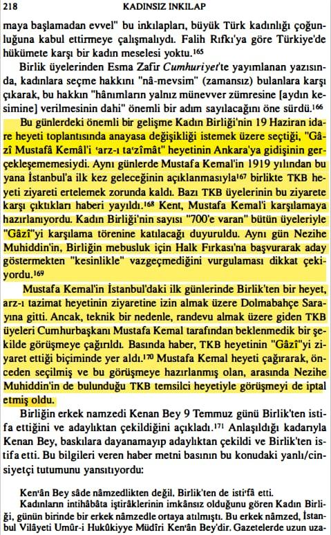
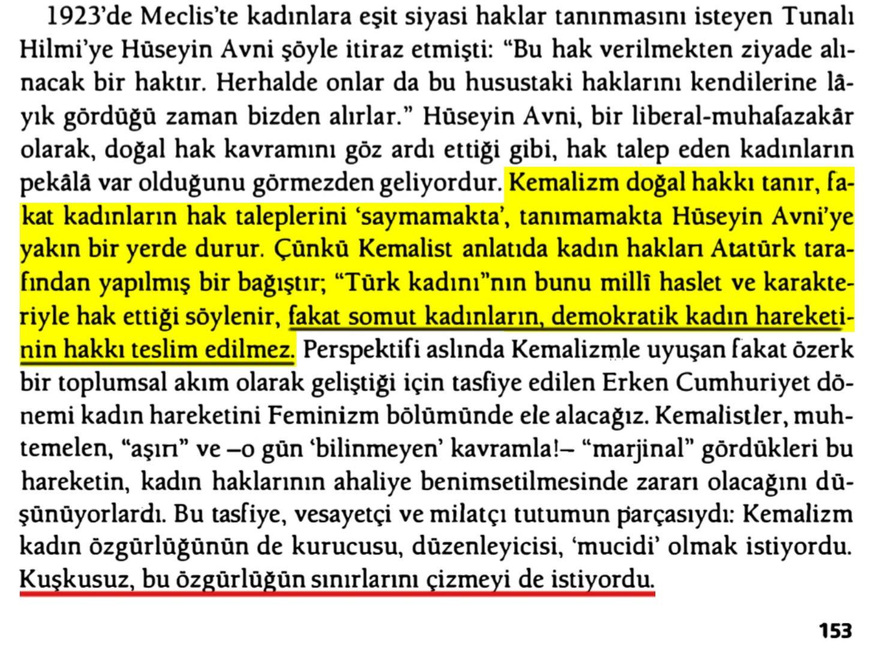
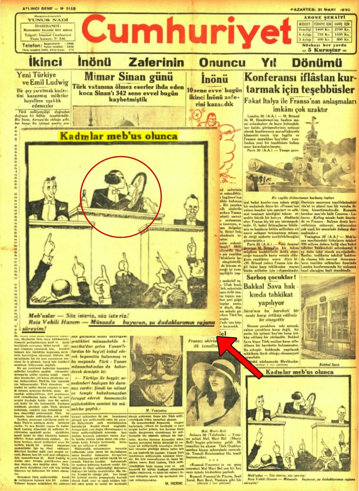
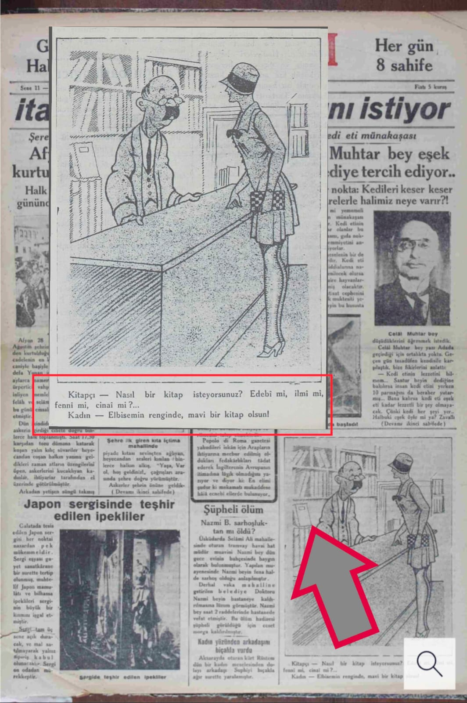

📌 *Pekâlâ, niçin mebusluk istiyorsunuz da, askerlik istemiyorsunuz?* 📚 Atatürkün Söylev ve Demeçleri, C.3, s.488

📌 **Tanıtım yazısından da anlaşıldığı gibi gazetenin amacı kadınlara, erkeklerle eşit haklar verilmesini talep etmek değildir. ** 📚 Kadın Gazetesi, 1 Mart 1947
“ Gazi Hazretleri, erkekler, köylü, kentli seçme ve seçilme hakkına sahip değil midir, kadınlarımızı neden ayırt edeceğiz, niçin onlar bu haklara sahip olmasın?“
Kendisinin bize verdiği cevabın özeti şöyledir:
“ Erkekler asker ocağında vazife görüyor, orada talim ve terbiyeden geçiyor, kadınlarımızı yetiştirmemiz lazımdır.“
...Bu realist ve mantıklı cevaba verecek söz kalmamıştı.
Emredersiniz, köylü ninelerimizi yetiştirmek için Türk Kadınlar Birliği Teşkilatı vazifesini yapacaktır Paşa Hazretleri dedim.“
📚 İffet Halim Oruz, Atatürk Döneminde Türkiye'de Kadın Devrimi, İstanbul 1986, s.33

📌 **Mustafa Kemalin Hanımlarına Seçim ayrıcalığı. ** 📚 Yaprak Zihnioğlu, Kadınsız İnkılap Nezihe Muhiddin, s.138

📌 **Mustafa Kemalin Kadın Hakları için gelen heyeti görmezden gelmesi. ** 📚 Yaprak Zihnioğlu, Kadınsız İnkılap Nezihe Muhiddin, s.218

📌 *Kuşkusuz, bu özgürlüğün sınırlarını çizmeyi de istiyordu.*📚 Tanıl Bora, Cereyanlar Türkiye'de Siyasi İdeolojiler, s.153

📌 *Cumhuriyet Gazetesinin bir karikatür ile kadınların mebusluğunu eleştirmesi.*📚 Cumhuriyet Gazetesi, 31 Mart 1930, s.1
